19 марта, понедельник
Большую часть дня ехали по сильно холмистой местности. Хорошие виды, интересные, местами техничные грунтовки. На короткий участок выехали на асфальт, я расслабился и упал практически на ровном месте - колесо соскользнуло с бугорка покрытого мелким гравием. Упал не очень хорошо - кисть руки распухла и держать руль стало достаточно больно. Андрей поделился со мной перчатками с гелевыми накладками, немного помогло.
Ближе к Араду местность стала пустыннее. Проехали мимо бедуинской деревни, за нами увязались детишки на велосипедах, давно я так быстро не ездил в гору, зато оторвались и не пришлось выслушивать эти назойливые приставания.
Возвышаемся над местностью -)
Правда на окраине другого городка арабские детишки бросили Андрею в спину камень, не большой, но все равно не приятно. Откуда у них эта привычка?
До запланированной стоянки не доехали пару километров, решили остановится в роще миндаля. Не доехали скорее специально, так как в полукилометре от того места на карте значилось бедуинское поселение, а после сегодняшних встреч ночных гостей нам совсем не хотелось. Кроме того на деревьях кроме молодых зеленых плодов миндаля (тоже съедобных) висели миндалины прошлого урожая, черные снаружи, но вполне целые и вкусные внутри. Набрали два больших пакета, чистку оставили на завтра.
Дневной пробег 53, 2 км, набор высоты 1046 метров
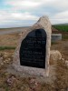 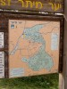 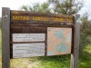 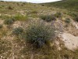 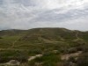 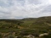 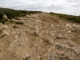 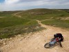 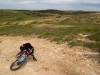 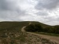 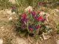 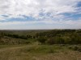 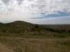 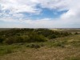 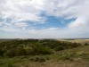 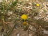 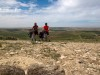 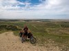 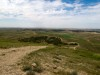  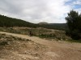 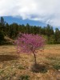 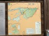 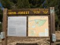 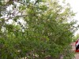
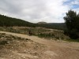 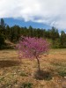 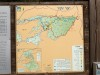 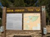 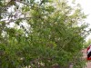
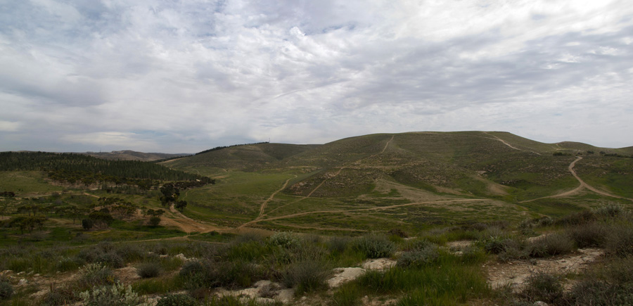
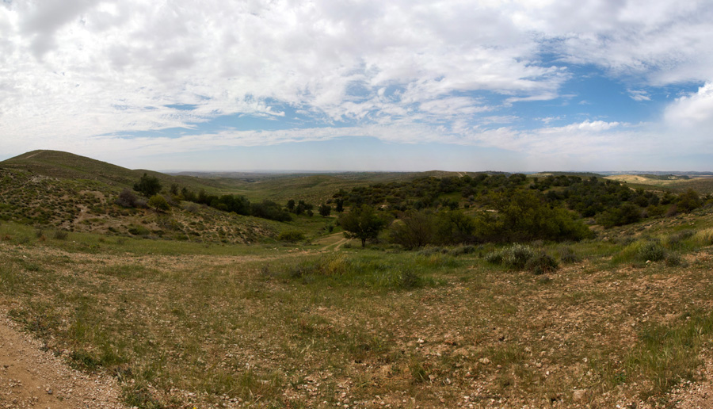